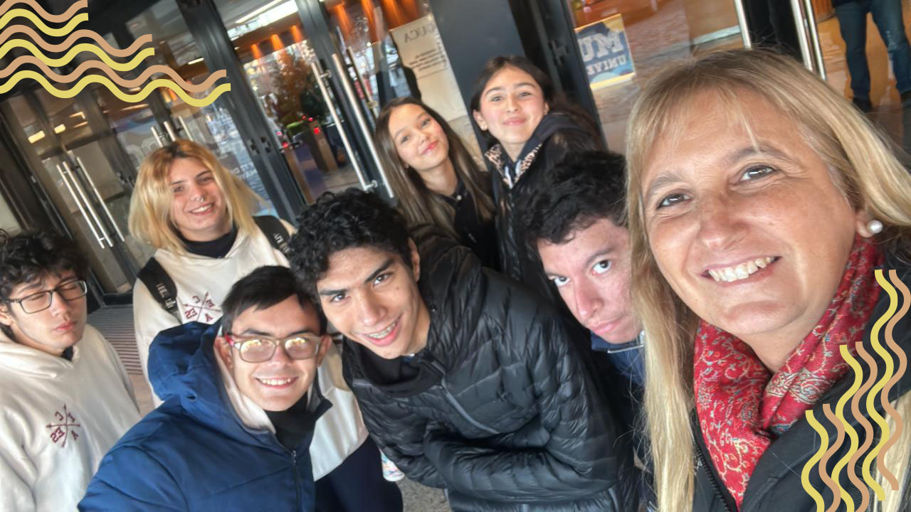
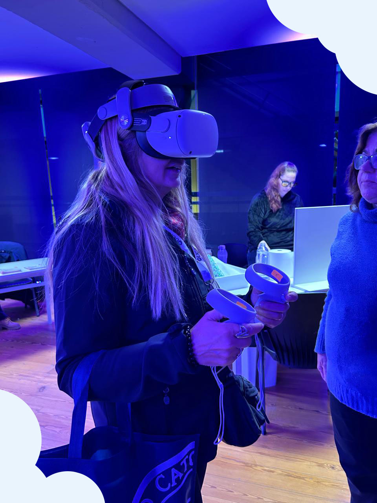
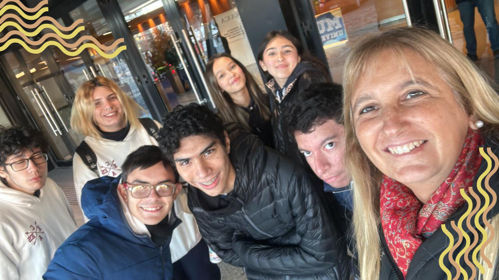
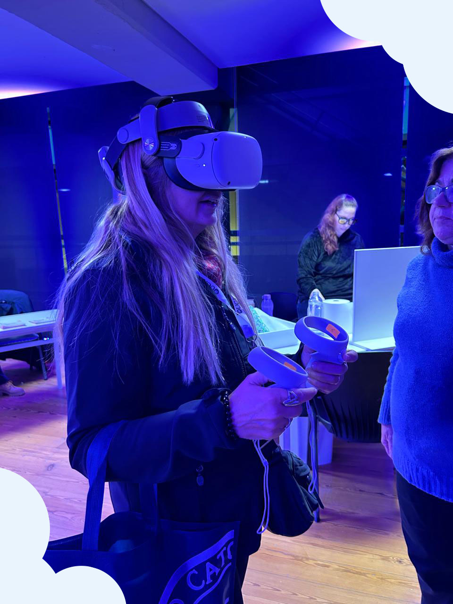

Nosotros fuimos a la uca siendo los dos quintos (5to A y 5to B) con la profesora Ale Paganini personalmente contare mi experiencia. Yo asisti a tres charlas ya que por el horario son las que tenia disponible y asisti a las siguientes: -Antes de pasar a las charlas queria contar como entramos, me encontre con un entorno bastante moderno. muy agradable el lugar y nos recibieron en el auditorio del 2ndo piso el cual nos dio a elegir entre folletos de las carreras que se estudiaban en la UCA, personalmente escogi ingenieria industrial ya que es mi profesion preferia de las carreras disponibles, tras darnos la bienvenida en el auditorio procedimos a las charlas. -La primera charla que asisti era acerca de marketing, el profesor nos habló acerca de innovaciones y como podemos aplicarle marketing, desde ideas bastantes simples hasta algo unico que nazca de nosotros para poder tener un emprendimiento propio con bases solidas, nos explico tambien acerca de la materia, que conceptos veremos muy brevemente si decidimos ir y la dinamica de una clase suya, bastante interesante ya que uno no conoce como es el ambito universitario en este aspecto y ver esto de cerca me dio una idea y una percepcion diferente a la que tenia desde mi ignorancia. -La segunda charla fue de el area de letras, puntualmente el departamento de ingles, vino la becana a darnos la bienvenida y a introducirnos un poco acerca de esta etapa universitaria y por supuesto a darle paso a la profesora de ingles que nos dio una clase totalmente en ingles, fue muy interesante para mi porque yo disfruto mucho el ingles y al escuchar a otros hablantes inconcientemente registro palabras a mi mente ampliando mi vocabulario y mejorando cada vez mas el habla lo cual me estusiasma cada vez mejorar en ingles al ser una lengua universal y muy exigida laboralmente es bastante util. La profesora nos planteo que ramas de esa seccion del ingles podiamos estudiar, una era traduccion, otra era profesorado y la ultima era licenciado nos planteaba que nos esperaba en la carrera, nos dio una pequeña charla acerca de este mundo y luego pasamos a la parte gramatica, tratando de explicar como se podria aplicarle genero a las palabras en ingles un genero ya que eran mas neutras, el cual es el caso contrario en español ya que todas las palabras tienen genero, muy entretenido pero no es lo que estudiaria personalmente. -antes de ir a la ultima charla la profesora Paganini nos dio a cada uno un voucher con el cual la UCA nos brindaba comida a cambio de este, nos dieron un sadwich de jamon y queso, con un alfajor y un jugo de naranja, cumplio su propocito de matar el hambre y no estuvo mal tener un break de tanta charla y teoria, estaban disponibles en todo momento unos juegos de deportes como basketball y mini golf el cual si lo hacias bien te ganabas un premio como una libreta o unas lapiceras. -la ultima charla se suponia que era acerca de ingenierias pero veo que se centro en licenciatura de ciencia de datos, contada por un chico el cual consistia en ser basicamente un analista de los datos que te daban en la plantilla de datos y nos contaba un alumno su experiencia en la UCA sobre que dificultades aparecieron y que tuvo que hacer para recibirse, luego nos hablo una chica acerca de su carrera que era ingenieria informatica que esta creaba las bases de datos que estudiaba el otro chico y su ciencia detras, tenia bastante matematica obviamente es de esperar de toda ingenieria la matematica y como uno podia relacionarse con gente para ayudarse entre si con sus carreras, generando un ambiente bastante amigable para alguien en total ignorancia acerca de esto, personalmente no me gusto mucho ya que no hablo de ingenierias en general sino que se centro en ingenieria informatica y licenciatura en ciencia de datos. - para finalizar sobraron unos vouchers el cual compartimos todos la comida que recibimos y esperamos la hora de irnos, en resumen la visita estuvo bastante entretenida y a mi me gusto mucho personalmente ya que queria conocer la UCA y me dio un aire mas amigable y positivo acerca de la universidad y me da mas confianza de que uno puede lograr lo que quiere, solo hace falta diciplina y ganas, que uno puede lograr lo que se propone. Al retirarnos esperamos a todos los alumnos que vinimos para poder ir tranquilos sin que nadie se quedara.
 


